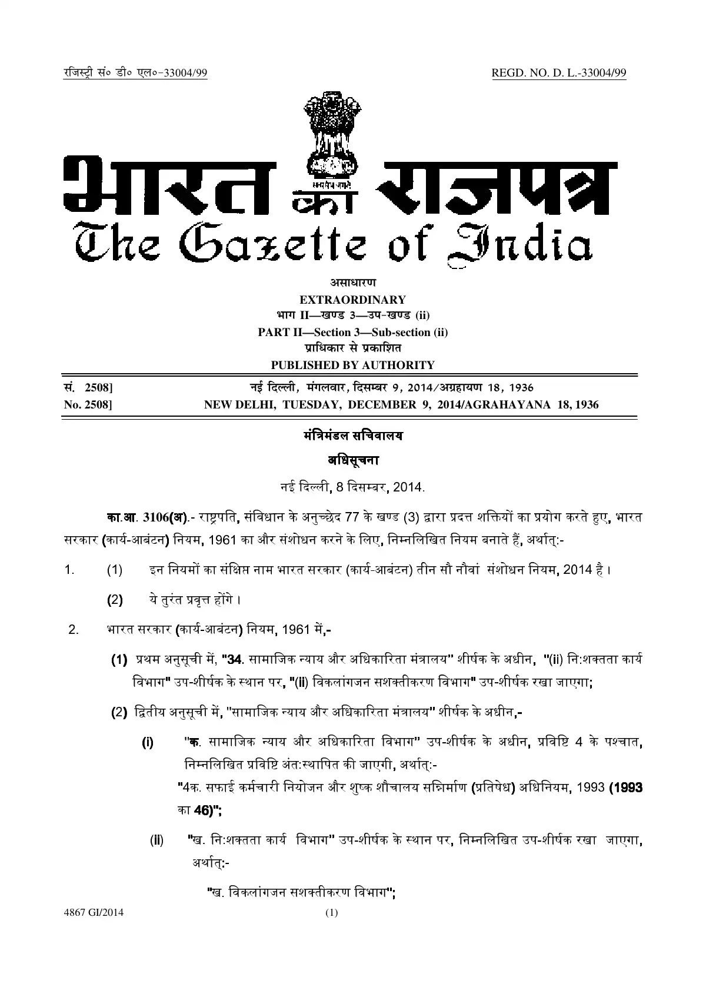
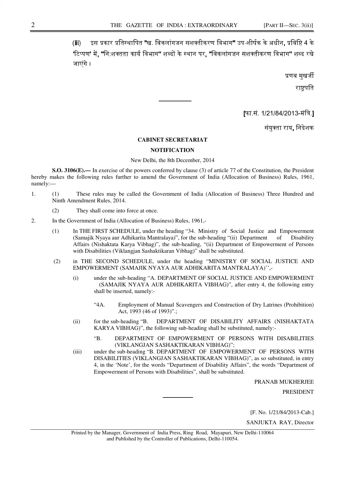

Amendment #309 (S.O. 3106(E), 2014)
4 changes: 1 to the First Schedule, 3 to the Second Schedule. 4 applied
The order, page by page
Page 1 of 2

Page 2 of 2

1234Schedule 1 › Ministry of Social Justice and Empowerment › Department of Disability Affairs
- ii. Department of Empowerment of Persons with Disabilities
applied at schedule 1 › ministry 34 › department ii in the Rules after #309
after Schedule 2 › MINISTRY OF SOCIAL JUSTICE AND EMPOWERMENT › DEPARTMENT OF SOCIAL JUSTICE AND EMPOWERMENT › entry 4
- 4A. Employment of Manual Scavengers and Construction of Dry Latrines (Prohibition) Act, 1993 (46 of 1993)
applied at schedule 2 › ministry MINISTRY OF SOCIAL JUSTICE AND EMPOWERMENT › department A › entry 4A in the Rules after #309
Schedule 2 › MINISTRY OF SOCIAL JUSTICE AND EMPOWERMENT › DEPARTMENT OF DISABILITY AFFAIRS
- B. DEPARTMENT OF EMPOWERMENT OF PERSONS WITH DISABILITIES
applied at schedule 2 › ministry MINISTRY OF SOCIAL JUSTICE AND EMPOWERMENT › department B in the Rules after #309
Schedule 2 › MINISTRY OF SOCIAL JUSTICE AND EMPOWERMENT › DEPARTMENT OF EMPOWERMENT OF PERSONS WITH DISABILITIES › entry 4 › note
for “Department of Disability Affairs” read “Department of Empowerment of Persons with Disabilities”
applied at schedule 2 › ministry MINISTRY OF SOCIAL JUSTICE AND EMPOWERMENT › department B › group_heading The following subjects… in the Rules after #309
How this document was read
From the Government of India (Allocation of Business) Rules, 1961 and their amendments, as published by the Cabinet Secretariat (cabsec.gov.in), read by orgpedia. The readings of the older scanned gazettes have known gaps.